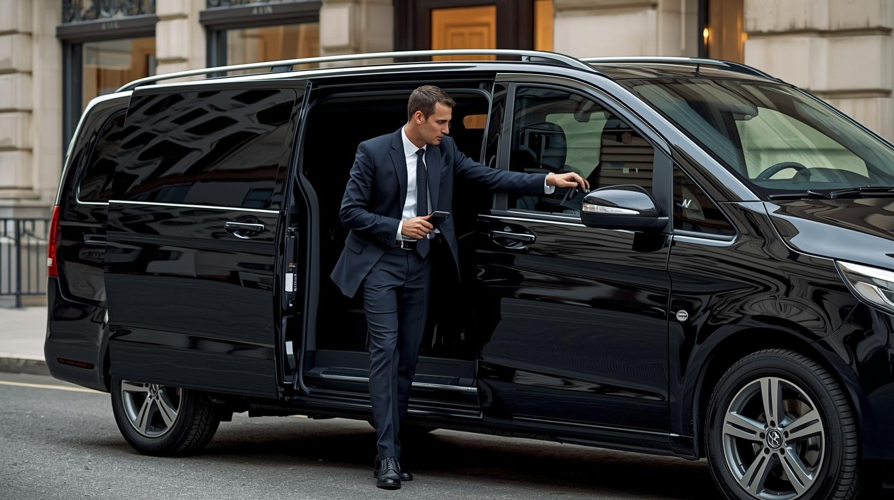

☰
At Le Grant Tours & Transfers, we provide premium chauffeur-driven transport services in Cape Town and across South Africa. Our services include airport transfers, corporate travel, private tours, and luxury event transportation. With a focus on reliability, comfort, and professionalism, we deliver a seamless travel experience for both local and international clients.

Reliable, punctual and stress-free airport transfer services.
Whether arriving at or departing from Cape Town International Airport, our luxury airport transfer service ensures a smooth, comfortable and professional journey every time.

Executive transport tailored for business professionals.
Our corporate chauffeur services are designed for executives who value punctuality, discretion, and efficiency. Ideal for meetings, airport runs, and business travel across Cape Town.

Explore Cape Town with luxury and flexibility.
Discover Cape Town’s most iconic destinations with our luxury private tours. From wine tours to coastal drives, we provide a premium sightseeing experience tailored to your preferences.

Arrive in style for every occasion.
Whether it’s a wedding, gala, or private event, our luxury transport service ensures you arrive with elegance, comfort, and reliability.
Experience premium transport in Cape Town with Le Grant Tours & Transfers.